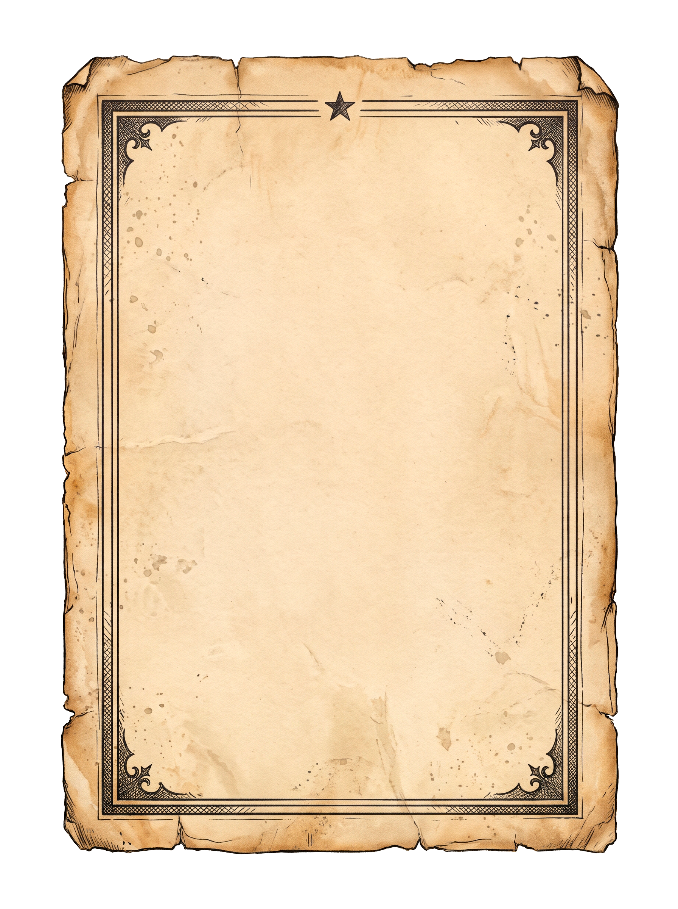
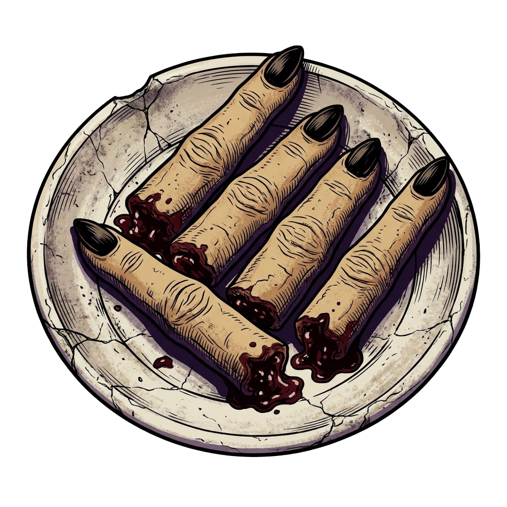

Dedos de bruja de galleta

Ingredientes:
Masa quebrada dulce, almendras tostadas enteras, confitura espesa de frutos del bosque.
Elaboración:
Talla los nudillos con ligeros cortes horizontales y fija las uñas de almendra con la mermelada sangrienta antes del horneado.